Abra o Studio e escolha BASEPLATE

Foto da tela.
Abra o Roblox Studio e clique no modelo Baseplate, o primeiro da fileira.
Projeto novo, do zero. Hoje não usamos nada da aula passada.
- Abriu o projeto antigo
- Feche a aba dele no x e volte para o Início.
Vá para a aba MODELO
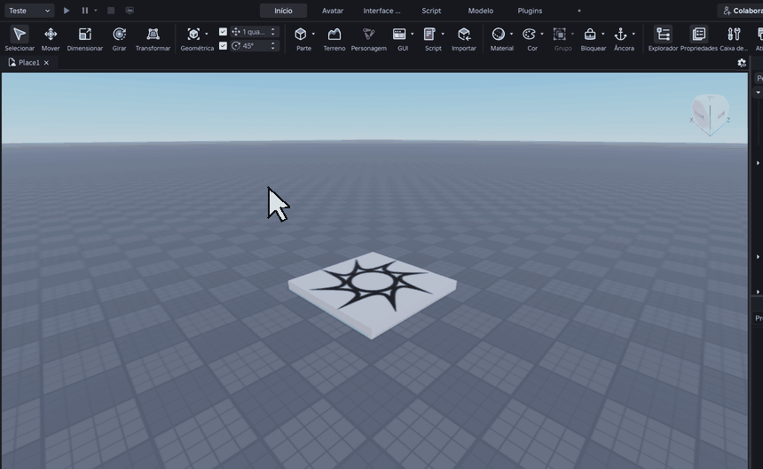
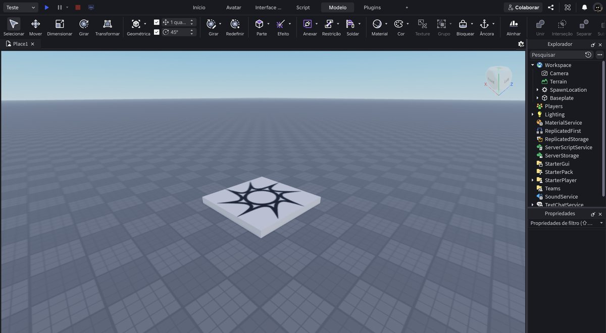
O clipe repete sozinho. Repare onde o cursor vai antes de clicar.
Clique em Modelo, na linha de abas lá em cima.
Sem isso os botões desta aula não aparecem na sua tela.
- Não acho a aba
- Ela fica entre Script e Plugins.
Crie a peça
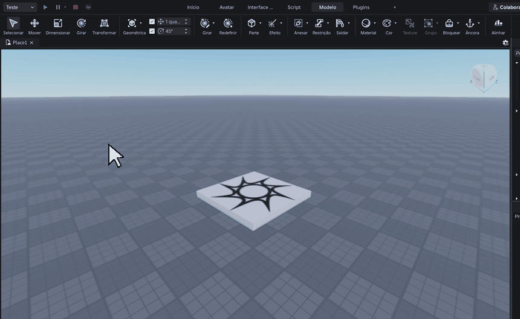
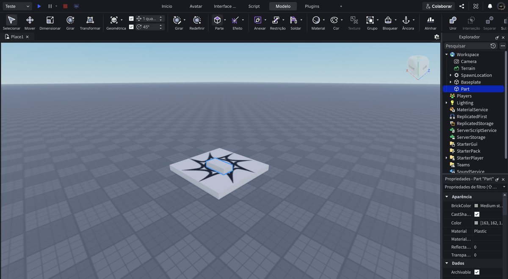
O clipe repete sozinho. Repare onde o cursor vai antes de clicar.
Clique em Parte — no desenho, não na palavra.
- Nada aconteceu
- Você clicou na palavra. Clique no desenho acima dela.
- Criei duas
- Aperte Ctrl + Z.
Leve a câmera até ela
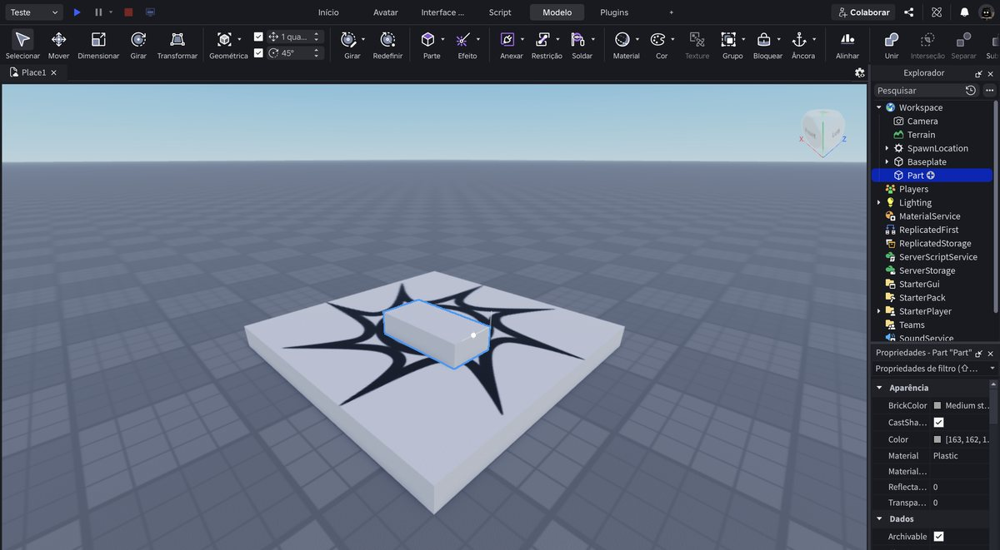
Foto da tela.
Clique em Part na lista, ponha o mouse em cima do mundo 3D e aperte F.
Depois aperte S algumas vezes para afastar.
- Apertei F e nada
- O mouse precisa estar em cima do mundo 3D, não da lista.
- Começou a escrever o nome
- Aperte Esc. O F foi para a lista.
Ancore
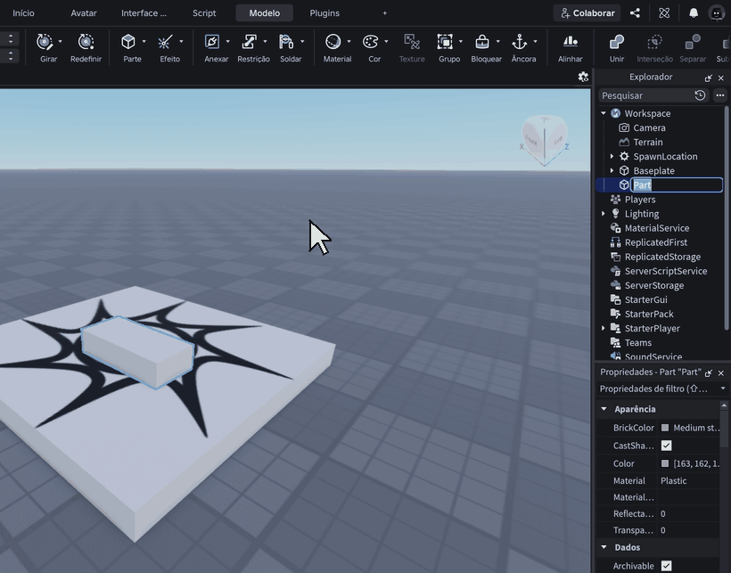
O clipe repete sozinho. Repare onde o cursor vai antes de clicar.
Com a peça selecionada, clique em Âncora.
Criou, ancorou. Sem isso a peça cai no segundo em que o jogo começa.
- Como confiro?
- Na caixa de busca das Propriedades digite anchor: a caixinha Anchored fica marcada.
Deixe a peça do tamanho de um chão
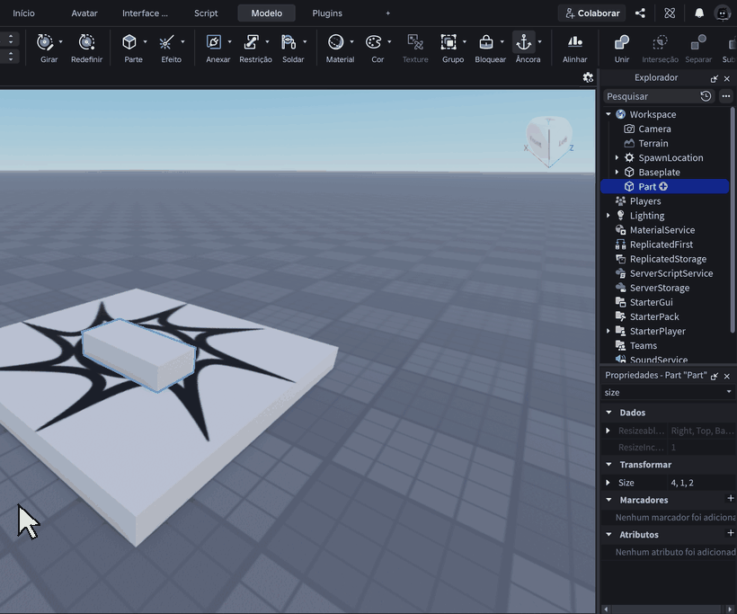
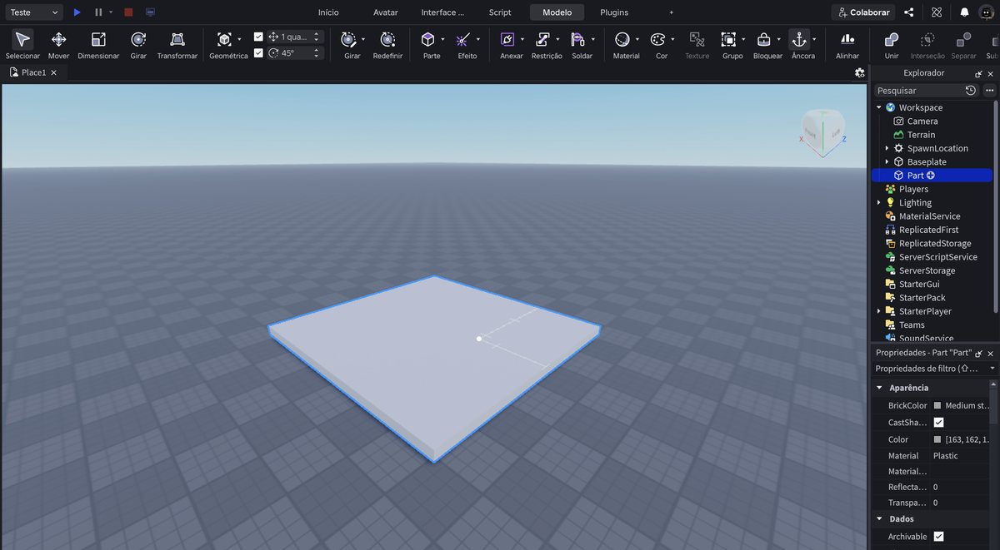
O clipe repete sozinho. Repare onde o cursor vai antes de clicar.
Embaixo à direita fica o painel Propriedades. Na caixa de busca dele escreva size.
Sobra uma linha só: Size. Clique duas vezes no valor, apague o que está lá e escreva 24, 1, 24. Aperte Enter.
Esses três números são largura, altura e comprimento.
- Só mudou um número
- O campo estava com parte do texto selecionada. Clique duas vezes no valor, aperte Ctrl + A e só então escreva.
- Não acho a caixa de busca
- Fica logo abaixo do título Propriedades, escrita “Propriedades de filtro”.
- Não tenho o painel Propriedades
- Aba Início → botão Propriedades.
- Apague o filtro depois
- Deixe a caixa de busca vazia, senão o painel continua mostrando só uma linha.
Pinte de azul
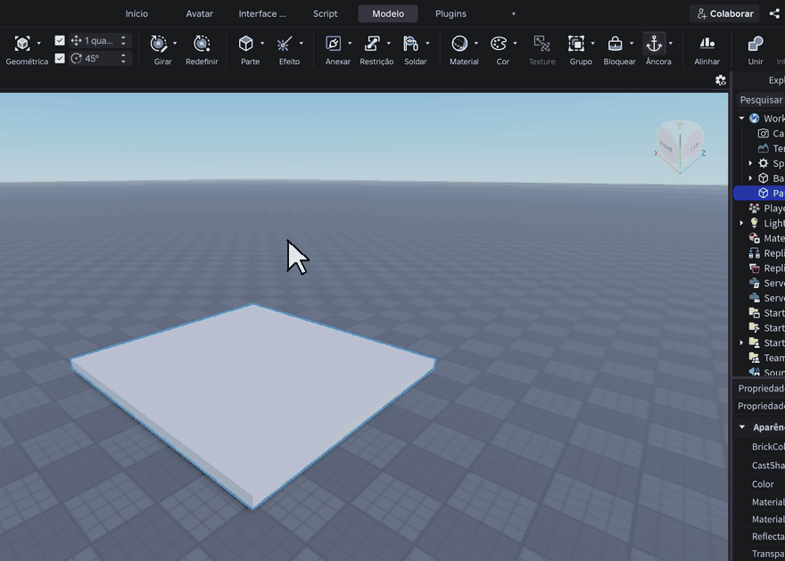
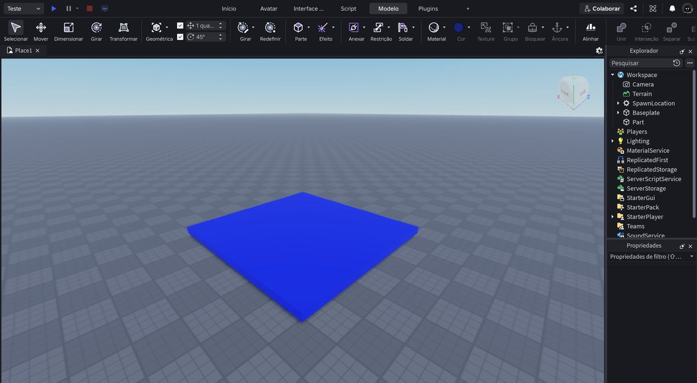
O clipe repete sozinho. Repare onde o cursor vai antes de clicar.
Três cliques, nesta ordem:
1. a setinha ao lado do círculo do botão Cor;
2. um hexágono azul;
3. o círculo do botão Cor — é esse que pinta.
- Escolhi e não pintou
- Falta o terceiro clique, no círculo do botão Cor.
- Continua sem pintar
- No rodapé do painel de cores há um interruptor “Clique no objeto para aplicar a cor”. Ele fica desligado.
Chame a peça de PISO
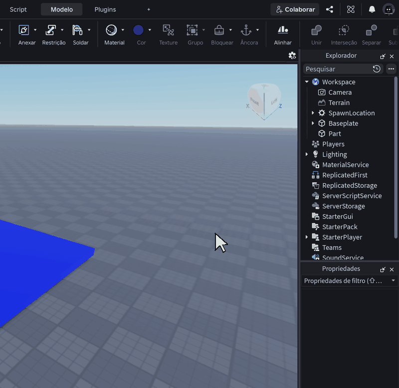
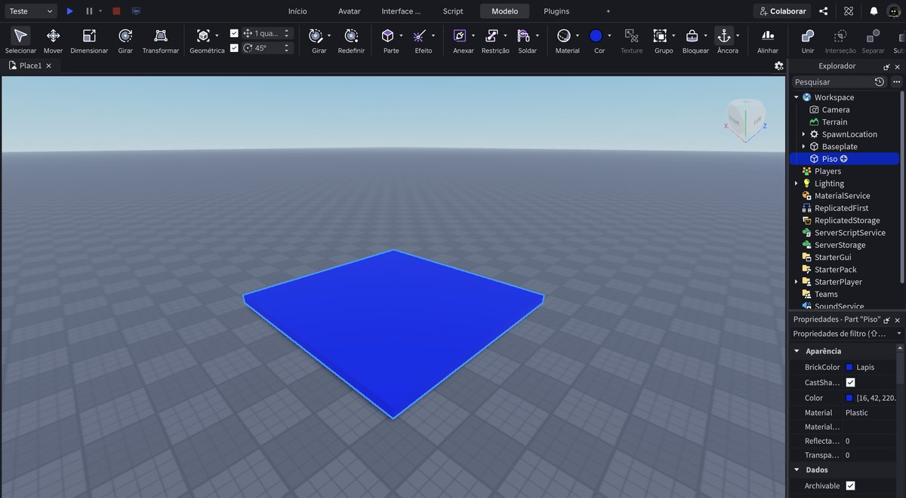
O clipe repete sozinho. Repare onde o cursor vai antes de clicar.
Botão direito em Part na lista → Renomear → escreva Piso → Enter.
- Voltou para Part
- Você apertou Esc. Termine com Enter.
Coloque um Script dentro do Piso
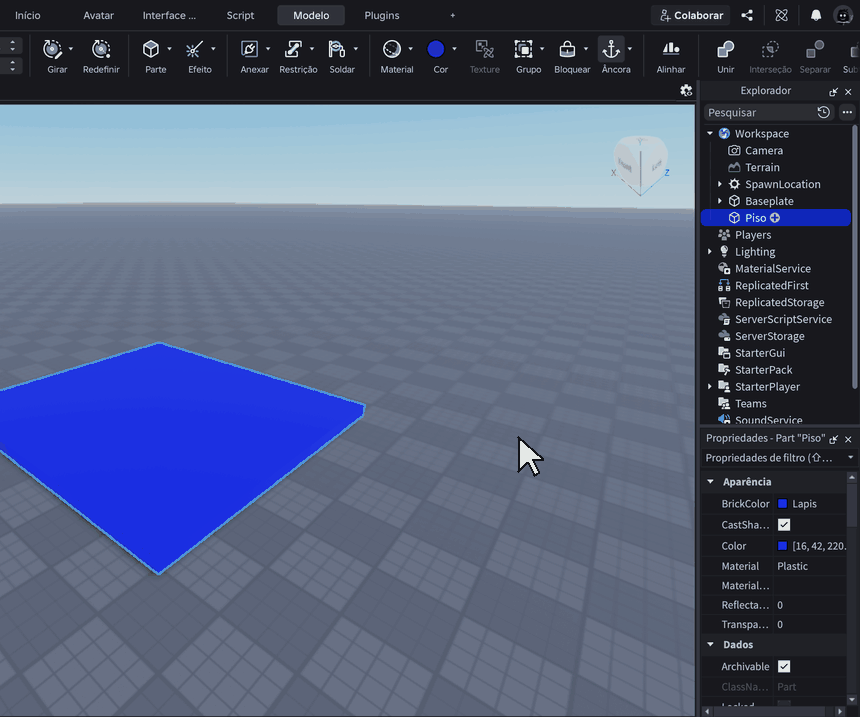

O clipe repete sozinho. Repare onde o cursor vai antes de clicar.
Clique em Piso na lista. Aparece um + depois do nome — clique nele e escolha Script.
- O Script ficou fora do Piso
- Arraste-o por cima da palavra Piso na lista.
- Não aparece o +
- Clique uma vez na linha do Piso primeiro.
Limpe o que veio pronto
Foto da tela.
O script nasce com print("Hello world!"). Apague a linha inteira.
- Sumiu a aba do script
- Clique duas vezes em Script na lista.
Escreva a primeira linha
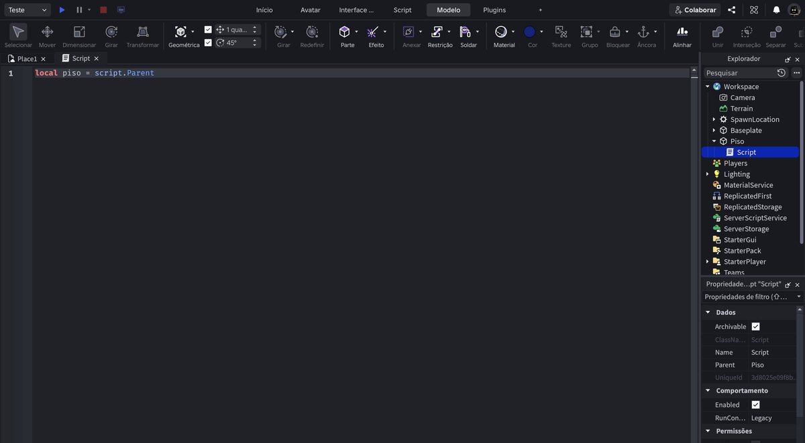
Foto da tela.
Como na aula passada, a primeira linha dá um apelido para a peça:
- local piso = script.Parent
Agora, escrever piso é a mesma coisa que escrever “a placa azul”.
- Risco vermelho
- Confira o ponto entre script e Parent, e o P maiúsculo.
Escreva o resto
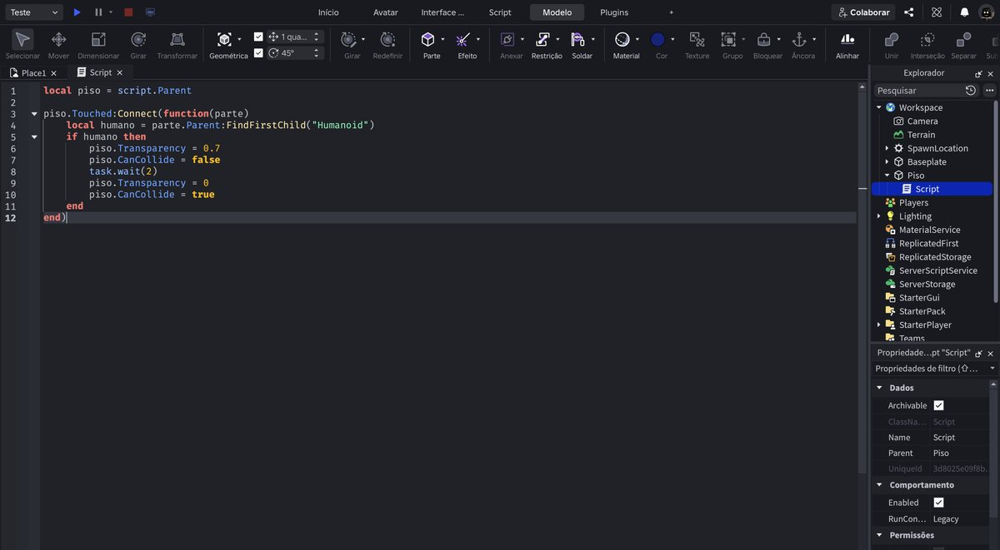
Foto da tela.
O código inteiro fica assim. Use Tab no começo das linhas que entram para dentro:
- local piso = script.Parent
- piso.Touched:Connect(function(parte)
- local humano = parte.Parent:FindFirstChild("Humanoid")
- if humano then
- piso.Transparency = 0.7
- piso.CanCollide = false
- task.wait(2)
- piso.Transparency = 0
- piso.CanCollide = true
- end
- end)
São dois end e o último termina com ). É onde todo mundo erra.
- Risco vermelho no fim
- Falta um end ou o ) final.
- task.wait dá erro
- É task.wait(2), com ponto entre task e wait.
- Escrevi Transparency errado
- Tem que ser exatamente assim, com T maiúsculo e y no fim.
Entenda o que você escreveu
Foto da tela.
piso.Transparency = 0.7 — deixa a peça quase invisível. 0 é sólida, 1 é totalmente transparente.
piso.CanCollide = false — esta é a linha que faz você cair. CanCollide é “dá para esbarrar?”. Com false, o boneco atravessa.
task.wait(2) — espere dois segundos. O código para aqui e continua depois.
As duas últimas linhas desfazem tudo: a peça volta a ser sólida e visível.
Sem o CanCollide a peça só ficaria transparente e você continuaria andando por cima dela, como se fosse um vidro.
- Qual a diferença entre as duas?
- Transparency é só aparência. CanCollide é se a peça existe para o corpo bater.
Volte para o mundo
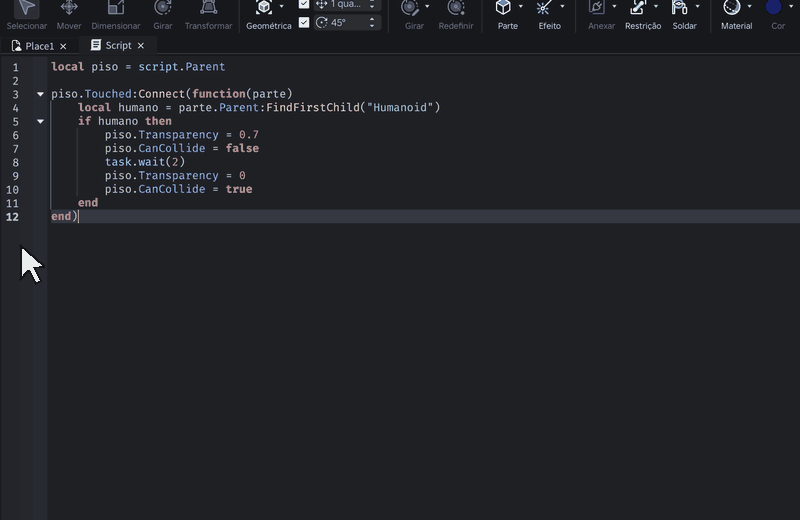
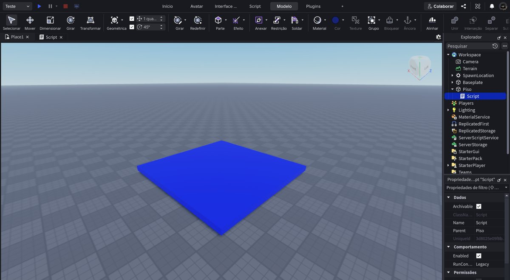
O clipe repete sozinho. Repare onde o cursor vai antes de clicar.
Clique na aba Place1, ao lado da aba Script.
- Fechei a aba do Script
- Não perdeu nada. Duplo clique em Script na lista.
Jogue e pise
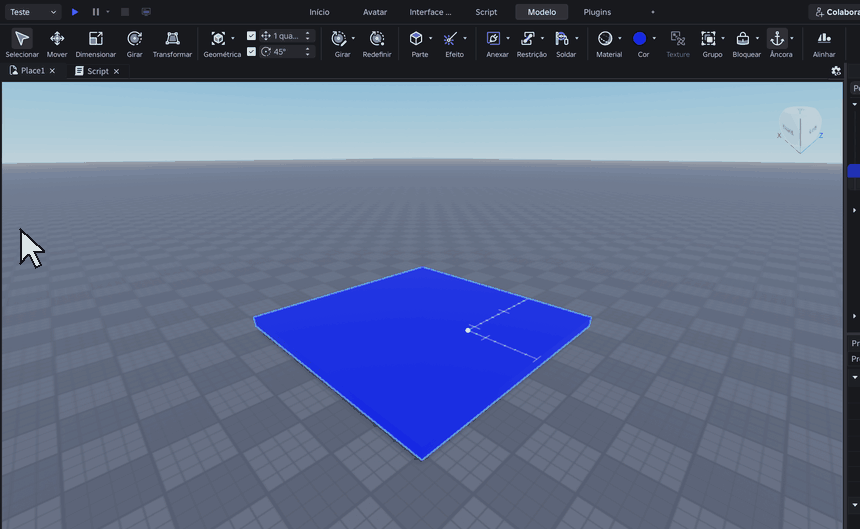
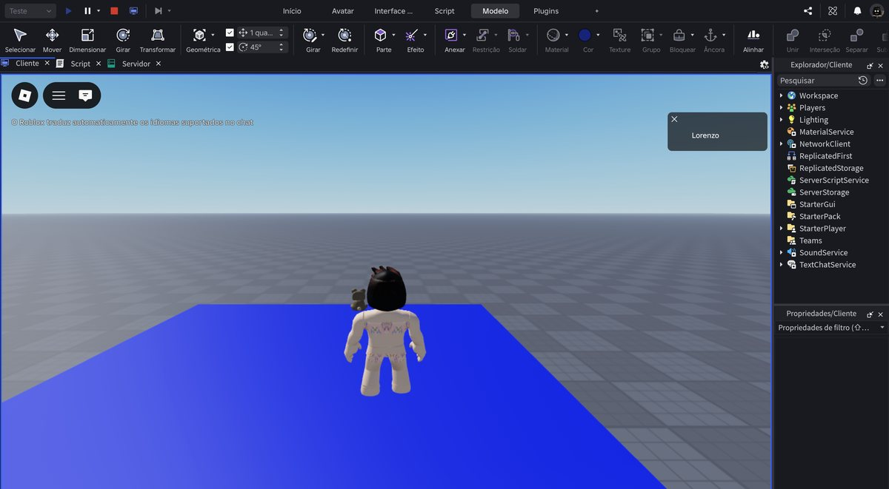
O clipe repete sozinho. Repare onde o cursor vai antes de clicar.
Aperte o ▶ azul.
Você nasce em cima da placa. No instante em que encosta, ela fica quase invisível, você atravessa e cai no chão cinza. Dois segundos depois ela volta.
- Nada aconteceu
- Três conferências, nesta ordem: 1) o Script está dentro do Piso? 2) sobrou risco vermelho no código? 3) você salvou o código antes de jogar? Basta clicar fora do editor.
- Ficou transparente mas não caí
- Faltou a linha piso.CanCollide = false.
- Caí para sempre
- A peça sumiu e não voltou: confira as duas últimas linhas, que desfazem a mudança.
Pare o jogo
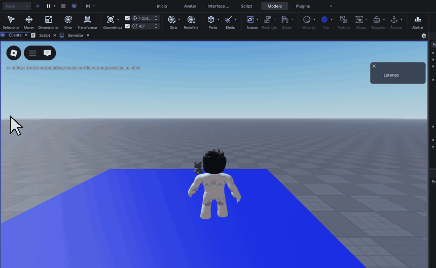
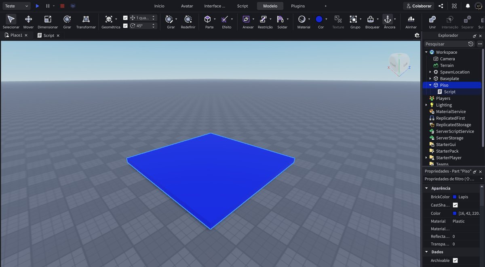
O clipe repete sozinho. Repare onde o cursor vai antes de clicar.
Aperte o quadrado vermelho.
Lembre: o que você constrói com o jogo rodando some quando o jogo para.
- Sumiu o que eu fiz
- Você fez com o jogo rodando. Refaça com o jogo parado.
Faça um caminho de plataformas
Foto da tela.
Agora o divertido. Com o jogo parado:
1. Botão direito no Piso da lista → Duplicar.
2. A cópia nasce no mesmo lugar. Use a ferramenta Mover e arraste a cópia pela seta para o lado.
3. Repita mais duas ou três vezes, formando um caminho.
Cada cópia já vem com o script dentro. Todas somem sozinhas.
- A cópia veio sem script
- Você duplicou a peça errada. Apague e duplique o Piso que tem o Script dentro.
- Arrastei e a peça foi para longe
- Ctrl + Z e arraste devagar, pela seta, não pelo meio da peça.
- As placas ficaram grudadas
- Diminua o tamanho delas: filtro size, valor 8, 1, 8.
Atravesse o caminho
Foto da tela.
Jogue de novo e tente atravessar sem cair.
Não dá para parar: cada placa aguenta você por um instante só. Esse é o jogo.
- É impossível
- Aumente o tempo: troque task.wait(2) por task.wait(4) em uma das placas e veja a diferença.
- É fácil demais
- Diminua para task.wait(1) e afaste mais as placas.
Salve
Foto da tela.
Ctrl + S → Salvar em arquivo → nome plataformas.
- Pediu para publicar
- Escolha Salvar em arquivo. Publicar é a Aula 4.